קאפיטל 13
זיצן און באקוועמליכקייט
זייטן 209–222 אינעם PDF
איינשטעלן אייער דרייוו-פאזיציע
שטעלט איין אייער דרייוו-פאזיציע איידער איר רירט אן סיי וועלכע אנדערע קאנטראל. דער כלל פונעם אונער'ס מאנואל איז צו שטעלן דעם דרייווער'ס זיץ אזוי ווייט צוריק ווי מעגליך, אבער אז איר זאלט נאך אלץ האבן פולע קאנטראל איבער'ן קאר. זיצט גלייך און גוט צוריק אינעם זיץ. איר דארפט קענען אראפדריקן די פעדאלן אינגאנצן אן זיך אנבייגן פאראויס, און האלטן דעם סטירינג באקוועם. דער מאנואל ציטירט די National Highway Traffci Safety Administration און Transport Canada, וועלכע רעקאמענדירן כאטש 10 אינטשעס (25 cm) צווישן דעם צענטער פונעם סטירינג און אייער ברוסט. דער פלאץ באשיצט אייך פונעם פראנט עירבעג ווען ער בלאזט זיך אויף. מאכט אלע זיץ-איינשטעלונגען פאר'ן דרייוון, קיינמאל נישט בשעת'ן פארן. אויב איר קענט נישט קומען גענוג ווייט פונעם סטירינג און דערביי נאך דערגרייכן די קאנטראלן, שלאגט דער מאנואל פאר זיך צו ערקונדיגן וועגן ספעציעלע צוגעפאסטע עקוויפמענט.
דער ווינקל פון דער רוקן-לען
שטעלט די רוקן-לען אויף א באקוועמע, גלייכע פאזיציע וואס לאזט גענוג פלאץ צווישן אייער ברוסט און דעם עירבעג-דעקל אין מיטן סטירינג. דער פראנט פאסאזשיר דארף טון דאס זעלבע. אויב די רוקן-לען איז אזוי ווייט צוריקגעלייגט אז דער אקסל-גארטל ליגט שוין נישט אויף אייער ברוסט, באשיצט אייך דער גארטל ווייניגער, און ביי א קראך קענט איר ארונטערגליטשן אונטער אים. וואס ווייטער די רוקן-לען איז צוריקגעלייגט, אלס גרעסער איז די סכנה. לייגט קיינמאל נישט קיין קישן אדער סיי וועלכע אנדערע זאך צווישן אייער רוקן און דער רוקן-לען, ווייל עס קען שטערן דעם סיט בעלט און דעם עירבעג.
יעדער אינזאסע דארף האלטן די גלייכע פאזיציע ביז דער קאר איז זיכער געפארקט און דער מאטאר איז אויסגעלאשן. זיך אנלענען ווייך, זיך אוועקלייגן, זיך אויסדרייען אויף דער זייט, זיך אנבייגן פאראויס אדער אויף דער זייט, אדער ארויפלייגן איין פוס אדער ביידע, הייבט שטארק אויף די שאנס פון א וואונד. א פראנט אינזאסע וואס זיצט נישט ריכטיג קען זיך אנשלאגן אין טיילן אינעווייניג, אדער געטראפן ווערן פון א פראנט עירבעג ווען ער בלאזט זיך אויף.
דער סטירינג
דער סטירינג פארענדיגט אייער פאזיציע. שטעלט אים איין ערשט נאכדעם וואס דער זיץ איז שוין איינגעשטעלט.
איינשטעלן דעם סטירינג
- שטעלט אפ דעם קאר.
- דריקט אראפ דעם אדזשאסטמענט לעווער אונטער דער סטירינג קאלאנע.
- רוקט דעם סטירינג ארויף אדער אראפ, און אריין אדער ארויס, ביז איר האלט אים באקוועם און זעט קלאר די מעסטערס און אינדיקאטארן אויפן 7-אינטש מיטער דיספליי.
- ציט ארויף דעם לעווער צו פארשליסן דעם סטירינג.
- פרובירט רוקן דעם סטירינג ארויף, אראפ, אריין און ארויס, צו זיין זיכער אז ער איז פארשלאסן.
קאפ-שטיצעס
יעדער זיץ האט א קאפ-שטיץ. ער איז א זיכערהייט-כלי, נישט קיין קישן. ער באשיצט דאס בעסטע קעגן whiplash (א שלאג אין נאקן) און אנדערע וואונדן ביי א קראך פון הינטן, ווען דער צענטער פון הינטערשטן טייל פון אייער קאפ ליגט אנגעלענט אין צענטער פונעם שטיץ, און די שפיצן פון אייערע אויערן זענען גלייך מיט זיין מיטלסטע הייך.
כדי אויפצוהייבן א פארנטיגן קאפ-שטיץ, ציט אים ארויף. כדי אים אראפצולאזן, דריקט אים אראפ בשעת איר דריקט דעם release קנעפל (דעם אפלאז-קנעפל). די פארנטיגע קאפ-שטיצעס קען מען נישט ארויסנעמען. הענגט קיינמאל נישט אויף קיין זאך אויף א קאפ-שטיץ אדער אויף זיינע פיס, און לייגט קיינמאל נישט קיין זאכן צווישן אן אינזאסע און דער רוקן-לען.
די הינטערשטע קאפ-שטיצעס שטעלט מען איין אויפן זעלבן אופן, און הינטערשטע פאסאזשירן דארפן זיי איינשטעלן איידער דער קאר רירט זיך. נישט ווי די פארנטיגע, קען מען די הינטערשטע קאפ-שטיצעס ארויסנעמען צום רייניגן אדער פאררעכטן. יעדער קאפ-שטיץ געהערט אין זיין אייגענעם פלאץ.
ארויסנעמען און צוריקאריינשטעלן א הינטערשטן קאפ-שטיץ
- ציט ארויף דעם קאפ-שטיץ אזוי ווייט ווי ער גייט.
- דריקט דעם release קנעפל און ציט דעם קאפ-שטיץ ארויף און ארויס.
- כדי אים צוריקצושטעלן, שטעקט אריין די פיס צוריק אויף זייער פלאץ.
- שטעלט איין די הייך בשעת איר דריקט דעם release קנעפל.
- ציט ארויף דעם קאפ-שטיץ צו זיין זיכער אז ער איז פארשלאסן.
קאנטראלן פון די פארנטיגע זיצן
Honda'ס אפיציעלע ספעציפיקאציעס ווייזן אז דער EX דרייווער'ס זיץ האט 10-way power adjustment (עלעקטרישע איינשטעלונג אויף 10 ריכטונגען), אריינגערעכנט 2-way power lumbar (עלעקטרישע אונטערשטע רוקן-שטיץ אויף 2 ריכטונגען). די שאלטערס זענען אויף דער זייט פונעם זיץ. דריקט דעם פארנטיגן טייל פונעם lumbar שאלטער צו פארשטארקן די גאנצע רוקן-שטיץ, און דעם הינטערשטן טייל צו פארקלענערן. Honda'ס feature guide זאגט אז די פארנטיגע זיצן זענען געמאכט צו געבן עקסטערע שטיץ פאר'ן אונטערשטן רוקן און די היפטן, כדי צו פארמינערן מידקייט ביי לאנגע נסיעות.
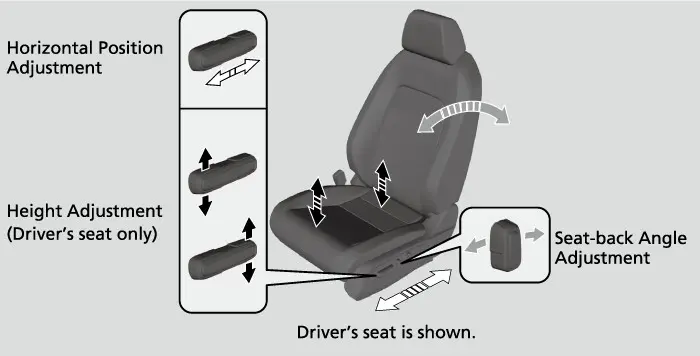
דער פארנטיגער פאסאזשיר זיץ אינעם EX איז מאנועל, מיט א מאנועלער הייך אדזשאסטמענט. דער פאסאזשיר דארף זיצן אזוי ווייט ווי מעגליך פונעם עירבעג אינעם דעשבארד. נאכן איינשטעלן סיי וועלכן זיץ, עלעקטריש אדער מאנועל, שאקלט אים אהין און צוריק צו זיין זיכער אז ער איז פארשלאסן אויף זיין פלאץ.
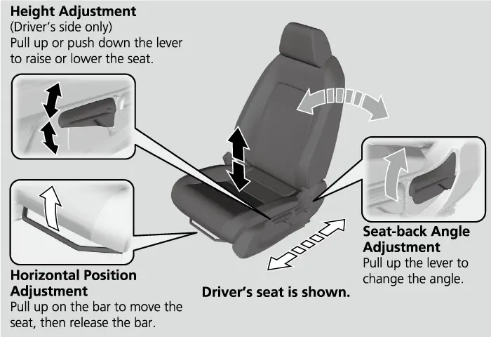
פארנטיגע זיצן: EX קעגן די נאנטע טרים'ס
| פונקציע | LX | EX | EX-L |
|---|---|---|---|
| דרייווער'ס זיץ | מאנועלע הייך | 10-way עלעקטריש + 2-way lumbar | 10-way עלעקטריש + 2-way lumbar |
| זכרון פאר'ן דרייווער'ס זיץ | ניין | ניין | 2 פאזיציעס |
| פאסאזשיר זיץ | מאנועלע הייך | מאנועלע הייך | 4-way עלעקטריש |
| געהייצטע פארנטיגע זיצן | ניין | יא | יא |
| באצוג | שטאף | שטאף | לעדער |
געהייצטע זיצן און באצוג
ביידע פארנטיגע זיצן אינעם EX זענען געהייצט. דער LX האט נישט קיין געהייצטע זיצן. Honda'ס feature guide זאגט אז די הייצערס זענען געמאכט צו דערגרייכן די מאקסימום ווארעמקייט אויסערגעווענליך שנעל. די מקורות פאר דעם קאפיטל באשרייבן נישט די הייצער-שאלטערס אדער וויפיל היץ-שטאפלען זיי האבן, דעריבער טוט דאס בוך נישט טרעפן. קליימעט טעמעס, אריינגערעכנט די הייצער-רארָן פאר די הינטערשטע זיצן, ווערן באהאנדלט אין קאפיטל 12. די EX זיצן זענען פון שטאף, וואס Honda באשרייבט ווי שטארק און ווייך צום אנרירן. דער פארנטיגער קאנסאל-קעסטל דינט אויך אלס די פארנטיגע ארעם-שטיץ.
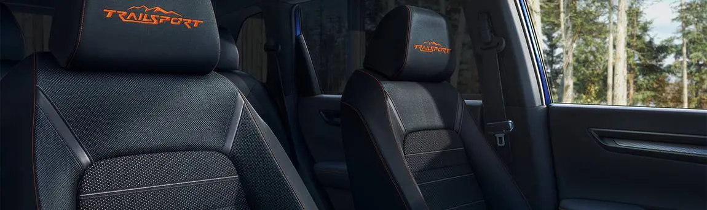
סיט בעלטס
סיט בעלטס זענען דער איינציגסטער מערסט עפעקטיווער זיכערהייט-כלי אינעם קאר. זיי האלטן אייך פארבונדן מיטן קאר, אזוי אז די עירבעגס און די אנדערע איינגעבויטע שוץ קענען ארבעטן. זיי העלפן ביי קראכן פון פארנט, פון דער זייט און פון הינטן, און ווען דער קאר קערט זיך איבער. אלע פינף זיצן האבן שויס- און אקסל-גארטלען מיט emergency locking retractors (אויפוויקלערס וואס פארשליסן זיך אין א נויט). די לאזן אייך זיך פריי רירן ביים נארמאלן דרייוון, אבער זיי פארשליסן זיך ביי א פלוצלינגדיגן אפשטעל אדער א קראך. דער פארנטיגער פאסאזשיר גארטל און אלע הינטערשטע גארטלען האבן אויך א lockable retractor (פארשליסבארער אויפוויקלער) צו באפעסטיגן קינדער-זיצן. דער דרייווער'ס גארטל האט נישט.
צומאכן א שויס/ אקסל גארטל
- שטעלט איין דעם זיץ, דערנאך זיצט גלייך און גוט צוריק.
- ציט ארויס דעם גארטל לאנגזאם.
- שטעקט אריין די latch plate (די מעטאלענע צונג) אין דער באקל און ציט א ביסל צו זיין זיכער אז זי האלט.
- טשעקט אז דער גארטל איז נישט פארדרייט און נישט פארכאפט אין גארנישט.
- לייגט דעם שויס-טייל אזוי נידעריג ווי מעגליך איבער די היפטן, דערנאך ציט ארויף דעם אקסל-טייל אזוי אז דער שויס-טייל זאל ליגן ענג.
- נעמט ארויס יעדע לויזקייט, און טשעקט אז דער אקסל-טייל גייט איבער דער מיט פון אייער ברוסט און איבער אייער אקסל.
ווען דער שויס-גארטל ליגט נידעריג, נעמען די שטארקע היפט-ביינער אויף זיך דעם כח פון א קראך. דער אקסל-גארטל צעטיילט דעם כח פונעם קראך איבער די שטארקסטע ביינער אין אייבערשטן קערפער. אויב איר ציט ארויס דעם גארטל צו שנעל, פארשליסט ער זיך. לאזט אים זיך א ביסל צוריקוויקלען, דערנאך ציט לאנגזאם. אויב א פאסאזשיר רירט זיך אסאך און ציט ארויס דעם גארטל זייער ווייט, קען זיך דער lockable retractor אריינשאלטן. כדי אים אפצולאזן, מאכט אויף דעם גארטל, לאזט אים זיך אינגאנצן צוריקוויקלען, דערנאך מאכט אים נאכאמאל צו.
הייך פונעם אקסל-אנקער
די פארנטיגע זיצן האבן אדזשאסטעבל אקסל-אנקערס. ציט דעם אנקער ארויס און רוקט אים ארויף אדער אראפ ביז דער גארטל גייט איבער אייער ברוסט און אקסל. עס זענען דא פיר הייך-שטאפלען. אויב דער גארטל רירט אן אייער האלדז, לאזט אראפ דעם אנקער איין שטאפל יעדעס מאל. נאך יעדער איינשטעלונג, טשעקט אז דער אנקער איז פעסט.
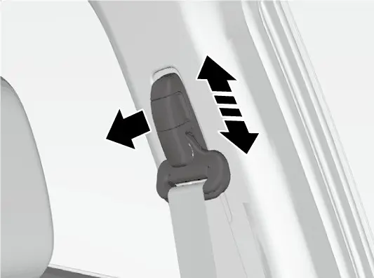
לייגט קיינמאל נישט דעם אקסל-גארטל אונטער'ן ארעם אדער הינטער'ן רוקן. צוויי מענטשן טארן קיינמאל נישט טיילן איין גארטל. לייגט נישט צו קיין comfort clips (באקוועמקייט-קלאמערס) אדער סיי וועלכע אנדערע צוגאב וואס טוישט די פאזיציע פונעם גארטל. שטעקט קיינמאל נישט אריין קיין פרעמדע זאכן אין דער באקל אדער אינעם אויפוויקלער. כדי אויפצומאכן דעם גארטל, דריקט דעם רויטן PRESS קנעפל און פירט צוריק דעם גארטל מיט דער האנט, כדי ער זאל זיך נישט פארכאפן אין דער טיר.
דער הינטערשטער מיטל-גארטל מיט אן אפנעמבארן אנקער
דער הינטערשטער מיטל-גארטל קומט ארויס פון דער סטעליע און האט אן אפנעמבארן אנקער.
צומאכן דעם הינטערשטן מיטל-גארטל
- ציט ארויס די קליינע latch plate און די latch plate פון זייערע האלט-שפאלטן אין דער סטעליע.
- שטעלט גלייך די דרייעק-צייכנס אויף דער קליינער latch plate און אויף דער אנקער-באקל.
- זייט זיכער אז דער גארטל איז נישט פארדרייט, דערנאך פארבינדט אים מיט דער אנקער-באקל.
- מאכט צו די הויפט latch plate אויפן זעלבן אופן ווי סיי וועלכן אנדערן גארטל.
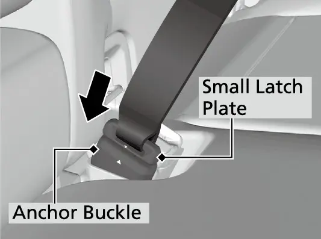
אויטאמאטישע טענשאנערס
די פארנטיגע זיצן און די צוויי דרויסנדיגע הינטערשטע זיצן האבן automatic seat belt tensioners (אויטאמאטישע גארטל-אנציערס). ביי א מיטלמעסיגן ביז שווערן קראך פון פארנט ציען זיי אן יענע גארטלען, אמאל אפילו ווען דער קראך איז נישט שווער גענוג אויפצובלאזן די פארנט אדער קני עירבעגס. ביי א מיטלמעסיגן ביז שווערן קראך פון דער זייט, ארבעטן אויך די טענשאנערס אויף ביידע זייטן. א טענשאנער קען ארבעטן נאר איין מאל. אויב איינער האט שוין געארבעט, צינדט זיך אן דער SRS אינדיקאטאר. דערנאך מוז א דילער אויסטוישן דעם טענשאנער און אדורכקוקן די גאנצע גארטל סיסטעם, ווייל זי קען אייך אפשר נישט באשיצן ביי א שפעטערדיגן קראך.
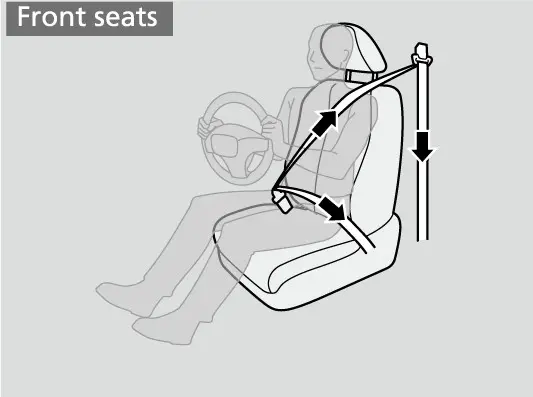
סיט בעלט רימיינדערס
ביי די פארנטיגע זיצן, ווען דער power mode איז ON און א גארטל איז אפן, הערט מען א ביפער און דער אינדיקאטאר בלינקט. נאך עטליכע סעקונדעס הערט אויף דער ביפער און דער אינדיקאטאר בלייבט אנגעצונדן ביז מען מאכט צו דעם גארטל. בשעת דער קאר פארט, הערט מען דעם ביפער פון צייט צו צייט און דער אינדיקאטאר בלינקט. דער אינדיקאטאר צינדט זיך אויך אן אויב א פארנטיגער פאסאזשיר מאכט נישט צו דעם גארטל אין משך פון זעקס סעקונדעס נאכדעם וואס דער power mode איז געשטעלט אויף ON. א וואג-סענסאר כאפט אויף צי עמיצער זיצט אויפן פאסאזשיר זיץ. אויב דער זיץ איז ליידיג, איז נישטא קיין ווארענונג. דער סטאטוס דיספליי ניצט דריי בילדער:
- גרין: דער גארטל איז צוגעמאכט.
- גרויער אפענער בילד: דער גארטל איז נישט צוגעמאכט און קיין אינזאסע איז נישט אויפגעכאפט געווארן.
- רויטער אפענער בילד: דער גארטל איז אפן און אן אינזאסע איז אויפגעכאפט געווארן.
א קליין קינד קען זיין צו לייכט כדי אנצוצינדן דעם סענסאר. דאס איז נאך א סיבה פארוואס קינדער פארן הינטן.
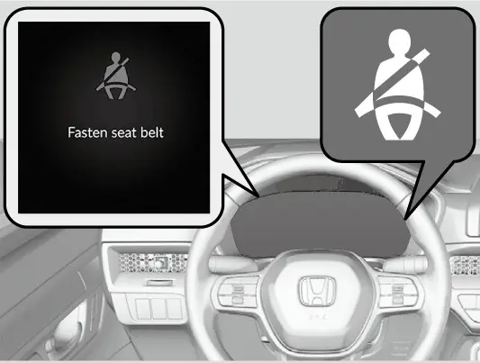
ביי די הינטערשטע זיצן ווייזט דער דיספליי דעם גארטל-סטאטוס ווען דער power mode ווערט ON בשעת א הינטערשטער גארטל איז אפן, ווען מען עפנט און מאכט דערנאך צו א הינטערשטע טיר, און ווען עמיצער מאכט צו אדער אויף א גארטל. גרין מיינט צוגעמאכט. א גרויער בילד מיינט נישט צוגעמאכט לעצטנס. א רויטער בילד מיינט אויפגעמאכט לעצטנס. אויב מען מאכט אויף א הינטערשטן גארטל בשעת'ן דרייוון, בלינקט דער אינדיקאטאר און מען הערט דעם ביפער. אן ווארענונג קלינגט אויך אויב דער קאר הייבט ווידער אן צו פארן בשעת א בילד איז רויט. די הינטערשטע סיסטעם האט גרענעצן. זי קען נישט אויפכאפן א הינטערשטן פאסאזשיר וואס האט קיינמאל נישט צוגעמאכט דעם גארטל, און זי קוקט נישט נאך די גארטלען פון קינדער-זיצן אדער LATCH אנקערס. טשעקט די הינטערשטע גארטלען אין אנפאנג פון יעדער נסיעה, און יעדעס מאל ווען עמיצער זעצט זיך הינטן.
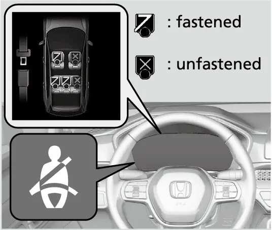
אדורכקוקן און אפהיטן
טשעקליסט צו אדורכקוקן די סיט בעלטס
| טשעק | אויף וואס צו קוקן |
|---|---|
| ציט ארויס יעדן גארטל אינגאנצן | צעפרעזלטע ערטער, שניטן, אפגעברענטע ערטער, אפגעריבנקייט |
| Latch plates און באקלס | ארבעטן גלאט |
| צוריקוויקלען | דער גארטל וויקלט זיך גרינג צוריק |
| לאנגזאם צוריקוויקלען | רייניגן נאר מיט מילדע זייף און ווארעמע וואסער |
| נאכן רייניגן | דער גארטל אינגאנצן טרוקן איידער ער וויקלט זיך צוריק |
| נאך סיי וועלכן קראך | אדורכקוקן ביים דילער |
ניצט קיינמאל נישט קיין בליטש אדער רייניגונג-סאלווענטן אויף א גארטל. טוישט אויס יעדן געשעדיגטן גארטל וואס שנעלער, און לאזט נישט קיינעם זיצן אויף א זיץ מיט א גארטל וואס ארבעט נישט. אויב א גארטל זעט אויס פארשלאסן אינגאנצן צוריקגעוויקלט, ציט שטארק איין מאל דעם אקסל-גארטל, שטופט אים צוריק אריין, דערנאך ציט אים ארויס גלאט. אויב ער גייט נאך אלץ נישט ארויס, לאזט דעם זיץ ליידיג און לאזט עס פאררעכטן ביים דילער.
הינטערשטע זיצן
הינטערשטע פאסאזשירן האבן ריכטיגן פלאץ. Honda'ס ספעציפיקאציעס ווייזן 41 אינטשעס פיס-פלאץ הינטן אינעם EX, כמעט ווי די 41.3 פארנט. קאפ-פלאץ איז 38.2 אינטשעס אין ביידע רייען. אקסל-פלאץ איז 57.9 אינטשעס פארנט און 55.9 אינטשעס הינטן. Honda'ס feature guide זאגט אז די הינטערשטע רוקן-לענען לייגן זיך צוריק אין אכט פאזיציעס ווען זיי זענען אויפגעשטעלט. נאכן איינשטעלן א רוקן-לען, שאקלט זי צו זיין זיכער אז זי איז פארשלאסן. ביי לאנגע נסיעות, לאזט אראפ די ארעם-שטיץ אין דער מיטלסטער רוקן-לען. די הינטערשטע USB-C טשארדזש פארטס ווערן באהאנדלט אין קאפיטל 5.
אראפלייגן די 60/40 רוקן-לענען
די הינטערשטע זיצן זענען צעטיילט 60/40 און לייגן זיך אראפ באזונדער. לויט Honda'ס feature guide געפינען זיך די אפלאז-לעווערס אויבן אויפן דרויסנדיגן עק פון יעדער רוקן-לען, וואו מען קען זיי דערגרייכן פון די זייט-טירן. פאר'ן אראפלייגן, נעמט אראפ אלע זאכן פונעם הינטערשטן קישן און פון דער פלאר. דער לאסט-פלאץ ווערט באהאנדלט אין קאפיטל 22.
אראפלייגן א הינטערשטע רוקן-לען
- באהאלט דעם מיטל-גארטל: שטעקט אריין זיין latch plate אין דעם שפאלט אויף דער זייט פון דער אנקער-באקל, דערנאך לאזט דעם גארטל זיך צוריקוויקלען אין דעם האלטער אין דער סטעליע.
- לאזט אראפ דעם הינטערשטן קאפ-שטיץ ביז זיין נידעריגסטע פאזיציע.
- שטופט די ארעם-שטיץ צוריק אריין אין דער רוקן-לען.
- ציט דעם אפלאז-לעווער און לייגט אראפ דעם זיץ.
ווען איר הייבט אויף דעם זיץ, שטופט די רוקן-לען פעסט צוריק און זייט זיכער אז אלע הינטערשטע אקסל-גארטלען זענען פאר איר, נישט פארכאפט הינטער איר. באשטעטיגט אז די רוקן-לען, די קאפ-שטיצעס און דער קישן זענען פעסט פארשלאסן פאר'ן דרייוון. אן אראפגעלייגטע רוקן-לען טאר נישט דריקן אויפן פארנטיגן פאסאזשיר זיץ, ווייל דאס קען מאכן אז די וואג-סענסארן פונעם פאסאזשיר זיץ זאלן נישט ארבעטן ריכטיג. באפעסטיגט לאנגע זאכן אזוי אז זיי זאלן נישט קענען פליען פאראויס ביי א שטארקן ברעמז.
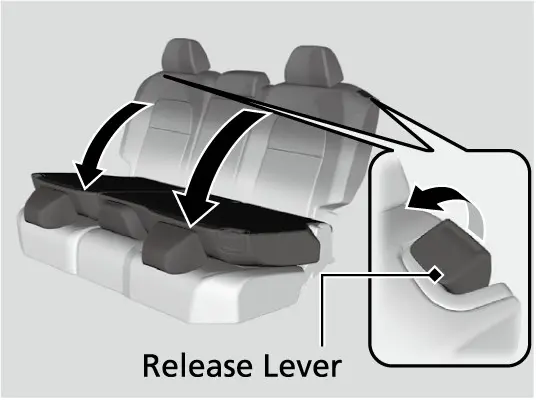
קינדער אינעם קאר
דער מאנואל, ציטירנדיג די National Highway Traffci Safety Administration און Transport Canada, זאגט אז קינדער פון 12 יאר און אונטער דארפן פארן ריכטיג באפעסטיגט אויף א הינטערשטן זיץ. א פראנט עירבעג וואס בלאזט זיך אויף קען פארוואונדן אדער טייטן א קינד פארנט, און א קינד פארנט שטערט מער דעם דרייווער. האלט קיינמאל נישט קיין קינד אויף די קני, לייגט קיינמאל נישט איין גארטל איבער אייך און א קינד, און לאזט קיינמאל נישט צוויי קינדער טיילן איין גארטל. יעדער קינדער-זיץ וואס איר קלייבט אויס מוז זיין פון דעם ריכטיגן סארט און גרייס פאר'ן קינד און פאר דעם זיץ-פלאץ, און ער מוז זיין לויט FMVSS 213 אדער CMVSS 213.
א בעיבי פארט מיטן פנים צוריק (rear-facing), שטענדיג אויף א הינטערשטן זיץ, ביז ער דערגרייכט דעם וואג אדער הייך גרענעץ פונעם קינדער-זיץ פאבריקאנט. דער קינדער-זיץ טאר נישט אנרירן דעם זיץ פאר אים. אויב ער רירט יא אן, שלאגט דער מאנואל פאר אים צו אינסטאלירן הינטער'ן פארנטיגן פאסאזשיר זיץ, צו רוקן יענעם זיץ פאראויס וויפיל עס פעלט אויס און אים לאזן ליידיג, אדער צו ניצן א קלענערן rear-facing זיץ. לאזט נישט א פארנטיגן זיץ זיך אנלענען אויף א קינדער-זיץ, ווייל דער וואג-סענסאר פונעם פארנטיגן זיץ קען דאן פאלש לייענען דעם אינזאסע'ס וואג. נאכדעם וואס דאס קינד וואקסט ארויס פונעם rear-facing זיץ, גייט עס איבער צו א פעסט באפעסטיגטן forward-facing קינדער-זיץ (מיטן פנים פאראויס), וואס געהערט אויך הינטן.
LATCH אינסטאלאציע
LATCH מיינט Lower Anchors and Tethers for Children (אונטערשטע אנקערס און טעטערס פאר קינדער(. Honda'ס ספעציפיקאציעס ווייזן lower anchors)אונטערשטע אנקערס) ביי די צוויי דרויסנדיגע הינטערשטע זיצן, און tether anchors (אנקערס פאר'ן טעטער-רימען) ביי אלע דריי הינטערשטע זיצן. דער מיטלסטער זיץ האט נישט קיין אונטערשטע אנקערס. דער אינעווייניגסטער און דרויסנדיגער אנקער ביי יעדן זיץ זענען 11 אינטשעס (280 mm) ווייט איינער פונעם אנדערן, און די צוויי אינעווייניגסטע אנקערס זענען 17 אינטשעס (432.6 mm) ווייט. קינדער-זיצן מיט שטייפע קאנעקטארס קענען נישט גיין אין מיטן. א זיץ מיט בייגעוודיגע באפעסטיגונגען מעג ניצן די צוויי אינעווייניגסטע אנקערס נאר אויב זיין פאבריקאנט ערלויבט קלאר אזא אפשטאנד. באפעסטיגט קיינמאל נישט צוויי קינדער-זיצן צו איין אנקער.
אינסטאלירן א LATCH קינדער-זיץ אויף א דרויסנדיגן הינטערשטן זיץ
- געפינט די אונטערשטע אנקערס.
- פארבינדט די קאנעקטארס פונעם קינדער-זיץ ווי זיינע אנווייזונגען באשרייבן, און האלט די אנקערס פריי פונעם סיט בעלט און אנדערע זאכן.
- הייבט אויף דעם קאפ-שטיץ ביז זיין העכסטע פאזיציע און פירט דעם טעטער-רימען דורך די פיס פונעם קאפ-שטיץ, נישט פארדרייט.
- הענגט אן דעם טעטער אויפן אנקער הינטער'ן זיץ און ציט אים אן ווי דער קינדער-זיץ פאבריקאנט הייסט.
- שאקלט דעם קינדער-זיץ פאראויס, צוריק און אויף די זייטן; איר דארפט שפירן ווייניג באוועגונג.
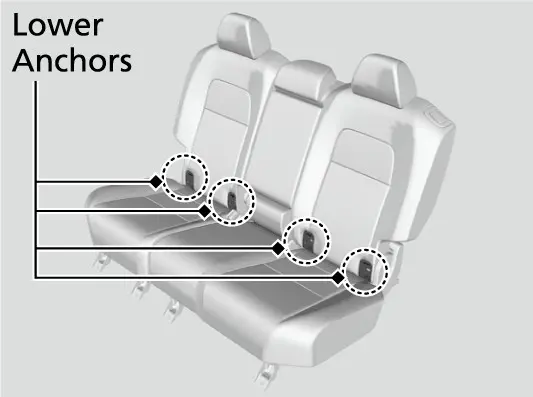
ניצט שטענדיג דעם טעטער פאר א forward-facing קינדער-זיץ, סיי ער איז אינסטאלירט מיט LATCH און סיי מיטן סיט בעלט. ביים מיטלסטן זיץ איז דער טעטער אנקער אין דער סטעליע. לאזט אראפ דעם קאפ-שטיץ אינגאנצן, עפנט דאס אנקער-דעקל, פירט דעם רימען איבער'ן קאפ-שטיץ נישט פארדרייט, דערנאך הענגט אים אן און ציט אים אן.
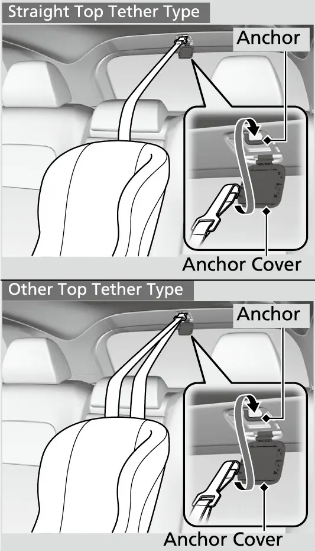
אינסטאלאציע מיטן סיט בעלט
א קינדער-זיץ קען מען אויך אינסטאלירן מיטן שויס/ אקסל גארטל אויף סיי וועלכן הינטערשטן זיץ, אדער אויפן פארנטיגן פאסאזשיר זיץ אויב עס איז אינגאנצן נויטיג.
אינסטאלירן א קינדער-זיץ מיטן סיט בעלט
- שטעלט דעם קינדער-זיץ אויפן קאר-זיץ און פירט דעם גארטל ווי די אנווייזונגען פונעם קינדער-זיץ ווייזן.
- שטעקט אריין די latch plate ביז זי קליקט.
- ציט לאנגזאם ארויס דעם אקסל-גארטל אינגאנצן ביז ער שטעלט זיך אפ; דאס שאלט אריין דעם lockable retractor.
- לאזט דעם גארטל זיך צוריקוויקלען עטליכע אינטשעס און ציט אים; ער טאר זיך נישט ווידער ארויסציען. אויב יא, טוט איבער דעם פריערדיגן שריט.
- כאפט דעם אקסל-גארטל נאנט צו דער באקל און ציט ארויף צו נעמען ארויס די לויזקייט פונעם שויס-טייל, בשעת איר דריקט מיט אייער וואג אויפן קינדער-זיץ.
- שאקלט דעם קינדער-זיץ; עס דארף זיין ווייניגער ווי איין אינטש באוועגונג נאנט צום גארטל.
כדי אפצולאזן דעם lockable retractor, מאכט אויף דעם גארטל און לאזט אים זיך אינגאנצן צוריקוויקלען. יעדן גארטל וואס ווערט נישט גענוצט און א קינד קען אים דערגרייכן, מאכט צו, ציט אויס אינגאנצן און פארשליסט, כדי א קינד זאל זיך נישט קענען שפילן דערמיט אדער אים ארומוויקלען ארום'ן האלדז.
עלטערע קינדער
פאר אן עלטער קינד וואס זיצט גלייך און אינגאנצן צוריק אויף א הינטערשטן זיץ, גיט דער מאנואל פיר שאלות:
- בייגן זיך די קני באקוועם איבער'ן עק פונעם זיץ?
- גייט דער אקסל-גארטל צווישן דעם האלדז און דעם ארעם?
- איז דער שויס-גארטל אזוי נידעריג ווי מעגליך, אנרירנדיג די דיך?
- קען דאס קינד אזוי זיצן די גאנצע נסיעה?
פיר מאל יא מיינט אז דער סיט בעלט פאסט. איין ניין מיינט אז דאס קינד דארף א בוסטער זיץ הינטן. טייל סטעיטס און פראווינצן פארלאנגען בוסטערס ביז א געוויסן עלטער אדער וואג (למשל 6 יאר אדער 60 lbs), דעריבער טשעקט די לאקאלע געזעץ. אויב א קינד מוז אמאל פארן פארנט, רוקט דעם פאסאזשיר זיץ אזוי ווייט צוריק ווי מעגליך, לאזט דאס קינד זיצן גלייך, און ניצט א בוסטער אויב נויטיג. Honda זאגט אז ביידע הינטערשטע טירן האבן child-proof locks (קינדער-שלעסער). לאזט קיינמאל נישט קינדער אליין אינעם קאר, ספעציעל ביי הייסע וועטער.
Rear Seat Reminder
דער Rear Seat Reminder (דערמאנונג פאר'ן הינטערשטן זיץ) העלפט אייך נישט פארגעסן א פאסאזשיר אדער א בעג. אויב א הינטערשטע טיר איז געעפנט געווארן א קורצע צייט פאר אדער נאכדעם וואס איר האט געשטעלט דעם power mode אויף ON, קומט ארויף א מעלדונג און אן ווארענונג ווען איר שאלט איבער צו VEHICLE OFF. די דערמאנונג ווייזט זיך פאר א קורצע צייט, דערנאך שאלט זי זיך אויס. זי כאפט נישט אויף מענטשן. זי ווייסט נאר אז א הינטערשטע טיר איז געעפנט און צוגעמאכט געווארן. זי וועט נישט ארבעטן אויב דער power mode ווערט נישט געשטעלט אויף ON אין משך פון 10 מינוט נאכן ניצן די הינטערשטע טיר. איר קענט אויסלעשן די מעלדונג אין Vehicle Settings אויפן A-type meter, אבער עס איז בעסער זי צו לאזן אן.
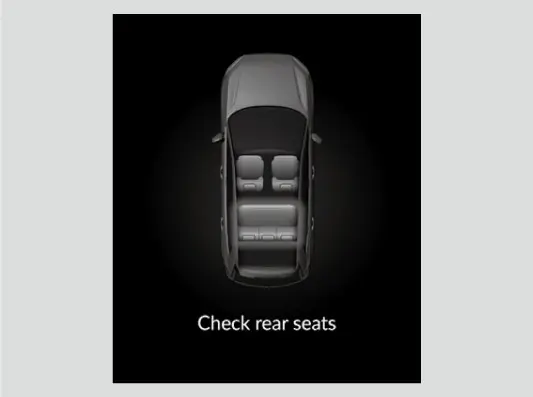
אפטע פראגעס
פראגע: האט מיין EX א זיץ-זכרון?
ענטפער: ניין. דער זכרון פאר'ן דרייווער'ס זיץ מיט 2 פאזיציעס קומט אויפן EX-L, Sport-L Hybrid און Sport Touring Hybrid.
פראגע: מיין סיט בעלט גייט נישט ארויס. וואס זאל איך טון?
ענטפער: ציט שטארק איין מאל דעם אקסל-גארטל, שטופט אים צוריק אריין, דערנאך ציט אים ארויס גלאט. אויב ער בלייבט פארשטעקט, לאזט דעם זיץ ליידיג און גייט צום דילער.
פראגע: קען איך אינסטאלירן א קינדער-זיץ אויפן הינטערשטן מיטלסטן זיץ?
ענטפער: יא, מיטן סיט בעלט און מיטן טעטער אין דער סטעליע. מיט LATCH קען דארט גיין נאר א זיץ מיט בייגעוודיגע באפעסטיגונגען, וואס זיין פאבריקאנט ערלויבט דעם 17-אינטש אפשטאנד צווישן די אינעווייניגסטע אנקערס.
פראגע: פארוואס האט זיך נישט אנגעצונדן די פאסאזשיר גארטל-ווארענונג מיט א קינד פארנט?
ענטפער: דאס קינד איז אפשר צו לייכט פאר'ן וואג-סענסאר. רוקט איבער דאס קינד אויפן הינטערשטן זיץ.
פראגע: דארף איך ארויסנעמען די הינטערשטע קאפ-שטיצעס כדי אראפצולייגן די זיצן?
ענטפער: ניין. לאזט זיי אראפ ביז זייער נידעריגסטע פאזיציע און שטופט די מיטלסטע ארעם-שטיץ צוריק אריין אין דער רוקן-לען.
פראגע: קען איך שטעלן א קינדער-זיץ גלייך אנגעלענט אן א פארנטיגן זיץ?
ענטפער: ניין. עס טאר נישט זיין קיין שום אנרירונג צווישן דעם קינדער-זיץ און דעם זיץ פאר אים.
הויפט פונקטן
- שטעלט איין דעם זיץ, די רוקן-לען, דעם סטירינג און די קאפ-שטיצעס פאר'ן דרייוון, מיט כאטש 10 אינטשעס צווישן אייער ברוסט און דעם סטירינג.
- דער EX האט א 10-way עלעקטרישן דרייווער'ס זיץ מיט עלעקטרישן lumbar, א פאסאזשיר זיץ מיט מאנועלער הייך, און געהייצטע שטאף פארנטיגע זיצן, אבער נישט קיין זכרון.
- טראגט דעם שויס-גארטל נידעריג אויף די היפטן און דעם אקסל-גארטל איבער דער מיט פון דער ברוסט; די פארנטיגע אנקערס האבן פיר הייך-שטאפלען.
- מאכט שטענדיג צו דעם אפנעמבארן אנקער פונעם הינטערשטן מיטל-גארטל פאר'ן ניצן.
- א טענשאנער ארבעט נאר איין מאל און צינדט אן דעם SRS אינדיקאטאר; א דילער מוז אים אויסטוישן.
- דער הינטערשטער גארטל-דיספליי קען נישט זען א פאסאזשיר וואס האט קיינמאל נישט צוגעמאכט, דעריבער טשעקט הינטן יעדע נסיעה.
- קינדער פון 12 יאר און אונטער פארן הינטן, און forward-facing קינדער-זיצן ניצן שטענדיג דעם טעטער.
- די הינטערשטע זיצן זענען צעטיילט 60/40 און לייגן זיך צוריק אין אכט פאזיציעס; לאזט נישט אן אראפגעלייגטע רוקן-לען דריקן אויפן פארנטיגן פאסאזשיר זיץ.